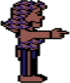
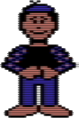

THE OFFICIAL
AVATAR HANDBOOK
A Comprehensive Guide to Understanding Habitat TM
‘‘Look Theodosis, a book for us!’’
Credits Habitat was created by the Lucasfilm Games Division and Quantum Computer Services. For Lucasfilm Games: Chip Morningstar was project leader, programmer and principal designer. Randy Farmer and Aric Wilmunder wrote the Commodore 64 software. Gary Winnick created most of the artwork and animation, with additional artwork by Ken Macklin. Chris Grigg created the sounds. Additional technical contributions by Charlie Kellner (the original cel animation system) and Ron Gilbert (the original Commodore object memory manager). Additional creative support was provided by Noah Falstein, David Fox, Douglas Crockford, David Levine, Mary Paterno, Chris Werner and David Martin. The ‘‘Official Avatar Handbook’’ was written by Jamie Williams and Chip Morningstar. Production Manager was Nancy Mohler. General Manager of the Lucasfilm Games Division was Steve Arnold. Thanks to Janice Morningstar, Pamela Farmer and Lori Wilmunder for extraordinary support and understanding. Special thanks to George Lucas. For Quantum: Janet Hunter was the primary Q-Link host system programmer. Additional technical support provided by Doug Coward, Mike Ficco and Ken Huntsman. Project schedule coordination at Quantum was handled by Cathy Anderson. Marc Seriff was technical manager at Quantum. The support and interest of Steve Case from Quantum and Clive Smith from Commodore Business Machines were essential in making Habitat possible.
TM and © 1987 Lucasfilm Ltd. All Rights Reserved. Avatar, Bureaucrat-In-A-Box, Populopolis, The Official Avatar Handbook, Rant, VenDroid and all other character names and elements of the game fantasy are trademarks of Lucasfilm Ltd. All Rights Reserved. Quantum Computer Services, Authorized User.
TABLE OF CONTENTS
AN INTRODUCTION...page 5.
SOME BACKGROUND...page 7. Why you’re here.
GETTING THERE...page 9. A basic introduction to Habitat...understanding the joystick and commands...some basic rules to live by...how certain things work.
THE FASHIONABLE AVATAR...page 20. How to assemble a look that’ll put you on the cover of Avatar’s Wear Daily...customization: how it works.
GETTING AROUND...page 22. How to go from one part of the world to another...TelePorts explained.
TURF, SWEET TURF...page 25. Why an Avatar’s home is his castle...how customization works.
THE ORACLE FACTOR...page 26. The mystique...the adventure...the possibilities explained...sort of.
DATES TO REMEMBER...page 29. Great moments in Habitat history.
AVATARS I HAVE KNOWN...page 31. How, what and why Avatars are named.
THE SOCIAL LIFE...page 32. How Avatars spend their plentiful spare time...dos and don’ts...adventuring explained.
SOME THINGS WE JUSTDON’T TALK ABOUT...page 34. Where the money comes from...the Token as currency...‘‘What, me work?’’
THE WELL-READ AVATAR...page 37. Must reading for every Avatar.
CINEMA AVATAR...page 38. The films that have put Habitat on the cinematic map.
HALL OF RECORDS...page 39. Notable Avatars... and how they got that way.
THE AVATAR GLOSSARY...page 40. The expressions that separate Those Who Know from Those Who Don’t Know.
AN INTRODUCTION
We don’t know all that much about Habitat, or Avatars, the human-like inhabitants of that world.
What we do know is that Avatars share a rich social, intellectual and cultural history that sets them apart from most higher life forms. The detailing of their culture was made possible through the work of Platorius and Figwash, two notable Avatar anthropologists from Thelonius University. Professors Platorius and Figwash graciously agreed to compile this manual, assembling the information necessary to ‘‘introduce’’ you to their society. The rest, as they say, is up to you.
We hope the information provided herein will assist you as you explore Habitat. We think you’ll find, as we have, that Avatars can be a lot like us...some of the time.
The Editors
Marin County, California
January, 1988
SOME BACKGROUND
Why You’re Here
As Avatars, we feel it necessary to explain to you why we, in essence, are allowing you to take our form and enter our society.
The early Avatars were adventurers like none other. If you read through Habitat history, you will find stories of grand expeditions, the discovery of magnificent treasures, and tales of bravery and valor that would challenge those of your King Arthur with his Knights of the Round Table.
But, as the years passed, Avatars changed. The spirit of adventuring died away, and we became more and more content to do nothing...
You see, the Avatars, when left to themselves, have become basically lazy creatures that would be only too happy to sit or sleep all day and night, lounging in their hot tubs, reading magazines or books, or chatting with friends, but never getting out to see the world because it would take too much effort.
The Oracle, which both watches over and directs life in Habitat (you will read more about It later), eventually became quite bored with this state of affairs and decided to take some action.
As Mystical Beings sometimes will, the Oracle decided that a Drastic Measure was in order, and allowed the discovery of our world by yours. The result, It hoped, would be for things, as you humans say, ‘‘to start hopping’’.
Once over the shock of intrusion, we Avatars came to agree with the Oracle. Our long period of inactivity has made most of us eager for some adventure, some intrigue, and some exercise.
In other words, we’re game if you are...
CHAPTER ONE
GETTING THERE
A Basic Introduction to Habitat
Getting to Habitat is accomplished by choosing ‘‘Lucasfilm’s Habitat’’ from the games menu in QuantumLink’s People Connection department. If ‘‘Lucasfilm’s Habitat’’ is not on your games menu, please see the installation instructions that accompanied your Habitat disk. To enter Habitat, you will need the QuantumLink Program Disk and the Lucasfilm’s Habitat Disk. Presumably you already have these things, or why would you be reading this? When you choose Habitat from the games menu, you will be asked to insert your Habitat Program Disk (side 1 of the Lucasfilm’s Habitat Disk) in the disk drive, from which the Habitat program will be loaded into your computer. It will then ask you to put your Habitat Imagery Disk (side 2 of the Lucasfilm’s Habitat Disk) in the disk drive when it is ready for it.
Naturally, you need to have your disk drive, monitor and modem hooked up and your joystick plugged into Joystick Port #1. All other peripherals must be unplugged. And you better unplug’em too, otherwise it won’t work!
When you enter Habitat for the first time, you will be given a chance to customize the appearance of your Avatar. Customization is explained in more detail below. Once you have done this, you will see your Avatar waiting for you in your ‘‘Turf’’, or home. Go for a ‘‘test drive’’ by trying out some or all of the basic commands, which follow.
Basic Habitat Commands
Avatars understand and respond to six basic commands: GO, DO, GET, PUT, TALK and HELP.
Using the Joystick
To initiate any of the basic commands (except TALK and HELP), you must press the button on your joystick, at which time the cursor will change into a question mark icon. Move the joystick forward, backward, left or right to the command you wish to give. The cursor will again change, into an icon showing the command you have chosen. Release the button to select this command. Your Avatar will then undertake the action.
If you accidentally get the wrong command icon by pushing the joystick in the wrong direction, don’t worry. You can select another command by just moving the joystick to another position. Your Avatar won’t do anything until you release the button. If you didn’t mean to push the button at all, just release the button while the question mark icon is showing. The four command icons will all change back into the question mark icon if you release the joystick and wait a few moments without doing anything.
The GO command
This command directs your Avatar in motion. If you wish to go somewhere, point the cursor to the spot or thing you wish to go to, and press the joystick button. Then move the stick to the GO position (the GO command icon will appear on the screen), and release the button. Your Avatar will walk to the spot indicated (pointing to the very edge of the screen will take you to the region next door — see page 21 for more information). In this way you can cross a room, explore the countryside, or just take a leisurely stroll. Be careful where you direct your Avatar to walk: if he encounters an obstacle in his path, he will stop when he bumps into it!
Samantha appeared at the door, and Winona crossed the room to greet her. ‘‘Hey, Win!’’ Samantha shouted, ‘‘I just got a message from Smedley. A gang is getting together over at his Turf for a little soak.’’ ‘‘I think I’ll pass on that one,’’ Winona blushed. ‘‘After that last party I swore I’d never get near Smedley’s hot tub again.’’
The GET command
Habitat is littered with objects, some of which you will need or want. To GET one of them, point the cursor at it, press the button, select the GET command, and release the button. Your Avatar will walk to the object, bend over and pick it up.
It is important to remember that you can only hold one object in your hand at one time — that’s why Avatars have pockets. You should also know that you cannot GET some objects, such as trees and houses, because they are either too heavy or they are fastened down. If you try to GET something and fail, either because your Avatar’s hands are already full or because the object just isn’t GETable, you will simply hear a ‘‘BEEP’’ and nothing will happen on the screen.
Norbert snickered with Broderick, as the two watched the new Avatar on the block trying out the GET command. ‘‘You can always tell a greenhorn,’’ Norbert chuckled. ‘‘They have no concept of the laws of physics — I just saw this guy try to pick up the TelePort booth!’’
The PUT command
Obviously, the opposite of GET. To use PUT, point to the place you wish to put an object in your possession, press the button, choose PUT and release the button. Your Avatar will drop the object at the indicated spot, crossing the room if need be.
Cynthia and Ralphie were having a teensie-weensie little disagreement about how she should arrange her Turf. ‘‘I mean it, Cyn,’’ Ralphie insisted, ‘‘you gotta put the lamp on the left side of the room and the trophy on the shelf!’’ Cynthia smiled sweetly. ‘‘Do you know where you can put the lamp, Ralphie?’’
The DO command
This ‘‘catch-all’’ command directs your Avatar to take some kind of action, either with an object, or to an object. The action taken depends on what object you are pointing at and what, if anything, your Avatar is holding in his hands. Press the button and select DO, then release the button. The object you point to will make the appropriate response. For example, the door will open or close, or the lamp will turn on or off.
‘‘Gee, look what I found!’’ Sedgewick said. ‘‘Sedge,’’ stammered Noah, ‘‘where did you get that...that...gun?’’ ‘‘Golly,’’ Sedgewick smiled evilly, ‘‘what do you think would happen if I pointed this at you and hit the DO command?’’
The TALK command
This command doesn’t involve using the joystick button. To TALK to other Avatars, simply type your message on the keyboard, and press the RETURN key when finished. Everyone you see on the screen will receive your message in a ‘‘word balloon’’ displayed above your Avatar’s head.
You can also talk directly to certain special objects, like an Oracle’s Fountain or a TelePort booth. Just point the cursor to the object (the Fountain or the booth), and type the message on the keyboard. Again, press RETURN when finished. If you are in a place with one of these objects, be careful where you point the cursor — if what you really mean to do is speak to the other Avatars on the screen, you should make sure you are not pointing at, say, a TelePort booth.
There is a special form of TALK called ESP that lets you send private messages to Avatars who may be elsewhere in the world. ESP is described on page 18.
‘‘Talk to me baby,’’ the Avastud leered at the innocent young girl. ‘‘What’s your sign? Come here often? What’s a nice Avatar like you doing in a place like this? Didn’t we know each other in another life? How am I doing?’’ ‘‘Isn’t it past your bedtime?’’ she coolly asked, and walked away. ‘‘I think she really likes me,’’ he said to no one in particular, taking chase.
The HELP command
Many of the items in Habitat have helpful instruction plates attached to them by their manufacturers. You can read an object’s instruction plate by pointing at the object with the cursor and then pressing the HELP (F7) key. This can be handy if you forget how something works or if you encounter an object you have never seen before. Practically everything in Habitat has a label or instruction plate of some sort on it. Be forewarned, however, that some items’ instructions may be more mysterious than helpful. This is especially true of things that are magical.
You can also find out who another Avatar is by pointing at him and then pressing the HELP (F7) key. A word balloon with his name in it will appear over his head. However, it is considered somewhat snoopy to do this to someone; to guard against invasions of privacy, whenever you identify someone with the HELP key, the Oracle automatically displays for the other person a balloon over your head telling them who you are.
How Certain Things Work
Ghosts
Avatars can turn themselves into ‘‘ghosts’’. When an Avatar is a ghost, he can’t affect the world in any way, though he can move around and see what is happening wherever he may be. Ghosts are an exception to the so-called ‘‘five guests only’’ rule, which states that no more than six Avatars may gather in one place at a time (see Chapter Three — Getting Around). Any number of ghosts (well, a very large number anyway) can occupy the same place at the same time. Turning yourself into a ghost is the preferred way of bypassing traffic jams in crowded areas. Becoming a ghost is also the way you join the audience in a theater or night club.
To turn your Avatar into a ghost, press the F1 key. Your Avatar’s body will disappear. To turn back into an Avatar, simply press F1 again. Your body will be restored to its previous condition. If you are a ghost, or if there are any ghosts in a region with you, you will see the ‘‘ghost-icon’’, an Egyptian Eye-Of-Horus hieroglyph, displayed in the upper left-hand corner of the screen.
To attend a play or lecture or other mass entertainment, turn yourself into a ghost before entering the theater. To get through an over-crowded section of the world, turn yourself into a ghost and move about as if the crowd wasn’t there. When you reach an uncrowded place, you can turn yourself back into a regular Avatar. You won’t be able to turn back into an Avatar if it is too crowded when you try to do so (you will simply hear a soft ‘‘BOING’’ sound instead). You will just have to move to a less crowded place or wait for somebody else to leave.
Matters of Posture
There are certain body movements you can control, such as standing up and sitting down. Point the cursor at your Avatar and press the button. Choose GO and watch him cycle his body posture among the available positions. You can also make gestures by pressing the ‘‘gesture keys’’. These are the CTRL-digit keys (hold the CTRL key down while pressing one of the digits 0 through 9).
| Pressing | makes your avatar |
| CTRL-1 | wave his hand |
| CTRL-2 | point |
| CTRL-3 | hold out his hands |
| CTRL-4 | jump in the air |
| CTRL-5 | face forward |
| CTRL-6 | face backward |
| CTRL-7 | bend over |
| CTRL-8 | stand up again |
| CTRL-9 | make a punching motion |
| CTRL-0 | frown |
In addition, F6 changes the color of flesh tones. You can make Avatars look white or green or any other color, if you are uncomfortable with the conventional pink.
Doors
If you GO to a door, your Avatar will generally just walk to the door. However, if the door is open and you point at the opening, your Avatar will walk through the door and go to whatever place is on the other side of it.
You can open or close a door it by pointing at it and choosing the DO command. If your Avatar is not standing next to it when you do this, your he will walk to the door first.
Seats
If you GO to a seat of some sort, such as a chair or a couch, your Avatar will generally just walk to it. However, if he is already next to it, he will sit down in it. He can stand up again with another GO command. If your Avatar is seated, the only commands you can use are TALK and GO.
Containers
Some objects, like suitcases and boxes, are containers that can hold other objects. To put something in a container, point at the container and select PUT. A container will only hold a certain number of objects, depending on its size. If it has reached its limit you will hear a ‘‘BEEP’’ sound and you will not be able to add anything more without first removing something from it using GET.
Some containers, such as boxes and bags, may be opened and closed. You can pick up a closed container, but not an open one. Of course, you can’t PUT anything into a closed container or take anything out. To open or close a container, point at it and choose DO.
To GET an object from an open container, point at the container, press the button, and choose GET. A picture will appear on your screen, showing you each of the objects in the container. Point at the one you want with the cursor and press the button to indicate your choice. If you don’t want any of the objects after all, point the cursor to empty space and press the button. In either case, once a choice has been made, the picture will disappear. (In some cases, the Commodore 64 will not have enough memory to display all the objects. If this happens, it will show you as many as it can; then, if you do not choose any of these, it will show you some more, continuing in this fashion until you have had an opportunity to see every object in the container). If you selected an object, you will GET it out of the container.
‘‘Now, have I got everything for my adventure?’’ Rodney mused as he packed his suitcase. ‘‘Boomerang, check. Compass, check. Grenade, check. Magic staff, check. And a change of disguise. Good — enough room left for the Orb of Oshtemo...if and when I find it...’’
Pockets
Every Avatar has a pocket to carry things. You can put something your Avatar is carrying into his pocket by pointing at the Avatar himself and choosing PUT, and you can get things back out again by pointing at the Avatar and choosing GET. Pockets work just like any other container.
Locks and Keys
There are some things you will be able to lock, such as certain containers and doors. To unlock or lock these objects, you must be holding the key when you select the DO function to open or close them. If a door or container is locked and you do not have the key, you simply will be unable to open it and you’ll hear a ‘‘BEEP’’.
Keys all look pretty much alike, but they are not all the same. Each key goes with a particular lock. Keys are distinguished by their ‘‘key numbers’’. To identify a key, point at it and press HELP (F7). The key number will be shown in a word balloon. In addition, containers and doors with locks on them will display their required key numbers in their HELP messages.
Reading and Writing
If you want to read something, such as a book or a newspaper, you must first GET it. Then, point at it and select DO. The text will appear on the screen. At the bottom of the screen will be a series of ‘‘buttons’’. You can press one of these screen buttons by pointing at it with the cursor and pressing the joystick button. When you are finished reading, pressing the QUIT button will end the text display. If the thing you are reading has more than one page, you can flip the pages back and forth by pressing the NEXT or BACK buttons. You can also flip to any page you care to by pressing the PAGE button and then typing in the desired page number when prompted to do so.
If you are holding a piece of paper, you can write on it in addition to reading it. Point at the paper and select DO. Again, the text will appear on the screen. If it is a fresh piece of paper, the screen will be blank. You ‘‘write’’ by typing on the keyboard. You can control where on the page you are writing by moving the cursor around with the joystick. You can erase text with the DEL key. You can erase the entire page by pressing the ERASE button. When you are finished writing, press the QUIT button as described above.
Every Avatar can send mail to other Avatars and receive mail from them. To send mail to someone, just write your letter on a blank piece of paper. On the first line of the letter, write ‘‘To:’’ and then the name of the Avatar to whom you want it sent — obviously, the Habitat Post Office can’t deliver a letter unless you provide an address. When you are finished composing your letter, just press the MAIL IT button at the bottom of the screen instead of pressing QUIT. You message will be sent on its way automagically.
Mail is delivered to your Avatar’s pocket. If there are mail messages awaiting you, when you GET from your pocket you will see a letter envelope among the things you are carrying. Pointing at this and pressing the button will GET the first letter (written on a piece of paper) into your Avatar’s hands. You can read this letter by pointing to it and choosing DO, as explained above in the description of paper. The top line of the letter will give the name of the sender and a postmark. If there is more than one letter waiting for you, you can GET each one from your pocket in turn.
If you have received a piece of mail from someone, the REPLY button is a useful shortcut that you can use to compose a response. Pressing the REPLY button will turn the postmark into the appropriate ‘‘To: so-and-so’’ line and erase the rest of the page so you can write your message on it. Just write your message and MAIL IT as if you had started from a blank sheet of paper. Since REPLY does erase the page, you won’t want to use it when you want to save the message that you are replying to.
If there is no mail waiting, instead of the envelope you will see a blank sheet of paper in your pocket. GETing this will yield a fresh, blank sheet of paper that you may use to send mail or to write notes to yourself or others. You can get as many blank sheets in this fashion as you like — it’s an unlimited supply. However, to prevent littering, any blank piece of paper that leaves your Avatar’s hands will simply disappear.
‘‘To: Chuckoober ‘‘My dearest Chuckles,’’ wrote Daphne, ‘‘You are the Avatar of my eye. Oh, Chucklette, when will I see you again?’’ She signed her name amid countless X’s and O’s and sent it on its way. When Chuck got the letter, he tossed his cookies.
ESP
Avatars have a certain telepathic ability and can communicate with each other over vast distances using ESP. ESP is a special private form of TALK. To TALK via ESP to someone, type ‘‘To:’’, and then the name of the person you want to send to, and then press RETURN. A prompt will appear at the top of the screen: ‘‘ESP:’’. (If you try to send ESP to someone who does not exist, or who is not in Habitat at the time, you will be told that the person cannot be contacted and you will not receive the ESP prompt.) When you see this prompt, type the message you want to send, as many lines as you wish, ending each with a RETURN. Press RETURN directly at the ESP prompt — i.e., enter a blank line — to stop sending ESP (this is to tell the stupid computer that you are done). You must end one ESP message before you can send another one. For example, if you wanted to send an ESP message to the Avatar named Gerfingle, you would type ‘‘To: Gerfingle(RETURN)’’ and then your message.
If you want to find out who is inside Habitat right now so that you can send ESP to them, pressing the F3 key will give you a list of the last few Avatars who have entered the system.
If someone sends an ESP message to you, a word balloon will appear over your Avatar’s head, saying ‘‘ESP from so-and-so’’ and then the message they are sending you.
Leaving Habitat
To leave Habitat, just press the SHIFT and RUN-STOP keys at the same time. You will be returned to People Connection.
Whenever you leave Habitat, either deliberately or by accident (e.g., if there is a problem with your telephone or a power failure), your Avatar is automatically turned into a ghost. This is the Oracle’s way of protecting your inanimate body from roaming brigands while at the same time preventing it from obstructing traffic. When you log back in you may need to press the F1 key to cease being a ghost.
CHAPTER TWO
THE FASHIONABLE AVATAR
‘‘Oh, brother,’’ Wilhelmina whispered to Prunella, ‘‘here comes ole fashion plate again.’’ Prunella looked over to see devastatingly handsome Berford sauntering up in the latest Oscy De La Rooster style. ‘‘Who does he think he is?’’ Wilhelmina hissed. ‘‘The Oracle’s gift to Avatars,’’ Prunella sighed, stars in her eyes. ‘‘The Oracle’s gift to Avatars.’’
One of the really fun things you can do when you enter Habitat is customize your appearance. What you get to help you in this task is a customization program allowing you to make the kind of alterations that would make a Beverly Hills plastic surgeon cry. You’ll automatically be put into the customization program the first time you enter Habitat. Just follow the instructions it gives you and you’ll do fine.
Clothing works a little differently. Avatars never go around undressed. In fact, their clothes are part of their bodies. It’s easy to change your Avatar’s appearance though...just use a handy bottle of spray-on body color. These can be purchased down at the General Store, or you can borrow one from a friend. While you are holding a sprayer, you can change the coloration of different parts of your body by pointing at them with the cursor and choosing the DO command.
You can also change your Avatar’s head. New heads can be gotten at a Head Shop, though they are often quite expensive — and the more exotic a head is, the more it will cost you. You can remove your Avatar’s old head simply by GETing it into your hands — just point at the head and choose GET. Then PUT your old head down somewhere and GET the new one. Once you are holding the new head in your hands, you can PUT it on your shoulders by pointing at yourself and choosing PUT.
Although you can remove your head at any time, it is considered extremely tacky to wander around the world headless. The sight of a headless Avatar can be quite upsetting to some of the younger, more liberal citizens of Habitat.
Some common styles of appearance in Habitat appear below:
|  |  |
CHAPTER THREE
GETTING AROUND
‘‘Oh, Ruark,’’ Penelope breathed, ‘‘I love you as no Avatar has ever loved another. But I fear for your life when my despised betrothed, Horace Mugwart, learns of our passion!’’ Ruark stared at her with intensely blue eyes set under his perfectly molded brow. ‘‘Penelope, my dove,’’ he said with all the gentleness and strength she had come to love him for, ‘‘when will you learn that I can take care of you? Freedom is just a TelePort away.’’ ‘‘Oh, Ruark,’’ Penelope cried, ‘‘How foolish I was not to trust you! We’ll simply TelePort so far away he’ll never find us!’’
The world of Habitat is quite large, and growing larger all the time. Since Avatars love exploration and adventure, being a seasoned world traveller is considered the surest sign of class and character. The ultimate status symbol in Avatar high society is to be able to give accurate directions to such exciting and obscure spots as the Great Enchanted Art Deco Caves and the infamous Tavern-Deep-In-The-Heart-Of-The-Terribly-Confusing-Desert.
What you see on the screen at any given time is just one small part of the world. Each such place is called a ‘‘region’’. One of the ways you can get from one region to the next is by walking. Just point the cursor off the edge of the screen to the right or the left or the bottom, or above the horizon into the sky in back, and then select GO. Your Avatar will walk in the chosen direction, out of the region and into the one next door. The screen will black-out during the time it takes to go between regions, and some ‘‘snappy tunes to travel by’’ will kick in (you can make the tunes stop with the F2 key). You can also travel to other regions by GOing through a doorway or to a building in the distance.
Not every region has neighbors in all four directions. If there is nothing next door, when you try to GO off the edge of the screen your Avatar will simply walk as far as he can and ‘‘BEEP’’ at you, and a warning message will be displayed.
The ‘‘Five Guests Only’’ Rule and The Stuff Limit
Ever since the ‘‘War to End All Wars, I Think’’ the Oracle won’t allow gatherings of more than six Avatars in one place at one time. This is the basis of the so-called ‘‘five guests only’’ rule. If you try to walk or TelePort to a place that is already filled to capacity, the Oracle won’t admit you. Instead, you will hear a ‘‘BOING’’ sound and be left standing where you already were. Of course, you can always turn into a ghost to get into or through congested regions.
Fact is, the Oracle just doesn’t like the world to get too cluttered. It won’t let you get more than a certain amount of stuff in one place at a time. If you try to do something that will exceed the Stuff Limit, you just won’t be allowed to succeed. This most commonly occurs when you try to walk into another region carrying more things than the Oracle deems will fit, but it can also happen when you try to open a closed container, buy something from a VenDroid, or do anything else that introduces a new item into the world. As when you try to violate the ‘‘five guests only’’ rule, you will hear a soft ‘‘BOING’’ sound to let you know what is going on.
If you are stuck, unable to do something because of the Stuff Limit, try putting things in your pocket, closing containers or discarding things in a garbage can.
TelePorts
If you have a long way to go, walking the whole way can be rather dull. This is why the Oracle created TelePorts. A TelePort is like a telephone, except that it sends your Avatar instead of your voice. TelePort booths are scattered throughout Habitat, though they are much more common in the urban areas. The TelePort is the preferred mode of long-distance transportation in Habitat, being a great improvement over walking, flying, or taking a bus or a taxi. This is especially true since there are no airplanes, busses or taxis in Habitat.
To use a TelePort booth, first walk into the booth by pointing at it and choosing GO. Then PUT some money into it (point at the booth and choose PUT while your Avatar is holding a Token — Tokens are described in more detail in Chapter Nine). If you have enough money, the TelePort will turn itself on and indicate that it is activated by flashing its logo (the costs vary somewhat, depending on how far you are going).
Once the booth is activated, you can Port wherever you want by TALKing to the booth: point the cursor at the booth and type the TelePort address of your destination. Be sure your cursor is pointing at the booth! If the address you type doesn’t match any destination, or if you just don’t have enough money in hand to travel the distance, you won’t go anywhere. Try a different address.
TelePort addresses are like telephone numbers, except that they can have letters in them too. TelePort addresses are usually names that identify the places they are located. You can find out the TelePort addresses of places you might want to visit by looking at a TelePort Directory. These handy books can be found in any Habitat Public Library. You can also find out the TelePort address of a Port you’re at by pointing at it with the cursor and pressing the HELP (F7) key.
Like telephone numbers, TelePort addresses have area codes. To Port outside the area you are in (a ‘‘long distance Port’’), you must give an area code. If the place you are Porting to is inside your area (a ‘‘local Port’’), you don’t need to give an area code, though you can if you feel like it. For example, the area code for the town of Populopolis is ‘‘Pop’’. Let’s say you want to Port to the booth at the north end of Bleem Street in Populopolis. If you are already within the Populopolis area, the TelePort address is ‘‘Bleem St North’’ but from outside the area you would have to use ‘‘Pop-Bleem St North’’. Got it?
CHAPTER FOUR
TURF, SWEET TURF
‘‘Oh, heck,’’ MacGruder thought, ‘‘if Chrysanthe and Penelope are coming for tea, I suppose I really should spruce the place up.’’ He quickly straightened up his Turf, and gazing around, grew more and more dissatisfied with the looks of the place. ‘‘I know!’’ he exclaimed, snapping his fingers, ‘‘I’ll redecorate!’’
Decorating, or, as in MacGruder’s case, redecorating, is accomplished in a couple of different ways. You can get a device called a ‘‘Change-O-Matic’’ that will let you choose the color and pattern of the things in your Turf. To use it, hold it in your hands, point at the item you wish to change, and choose DO. The thing you have pointed at will change. By doing this several times in a row you can cycle through all the various choices of color and style. As with the body-sprayer, the Change-O-Matic can be purchased at the General Store or you can borrow somebody else’s. Unless you have been chosen by the Oracle as a highly trustworthy person of impeccable taste, a Change-O-Matic will only work for you inside your own Turf.
Your Turf will come with some furniture, leaving it up to you to make just the right touches in decor. Maybe you’ll find them in the form of artifacts you bring back from your adventures. Perhaps you’ll have to go out and buy them. The Stuff Limit applies in the home Turf as well as anywhere else — don’t be extravagant, and don’t try to crowd too many objects into one area. No one will be impressed, and it will limit the number of people you can entertain.
CHAPTER FIVE
THE ORACLE FACTOR
‘‘Tell me, oh Wise One,’’ said Platypus to the Oracle, ‘‘will there be even greater adventure and riches in my future?’’ The answer from the Oracle was as foreboding as it was mysterious.
‘‘Your greed is such
That you may find
All you dare to seek.
In far off lands
With seven seas
And one, gigantic peak,
You’ll find the riches
But Beware
The ghastly Fendersneek.’’‘‘Oh, thank you, Oracle!’’ Platypus cried, and ran home to prepare for the adventure, little realizing that it would be his last.
There is one pervasive factor in every Avatar’s life: the Oracle, the great, all-knowing, mysterious power residing in Habitat. No one knows where It came from — but then again, no one really cares.
What Avatars do care about is the fun, intrigue and adventure that the Oracle provides. In return, they support It with donations.
The Oracle grants wishes, sends Avatars on quests and adventures, and has been known to play a trick or two.
The Oracle takes on many forms and appears in many places. It commonly manifests Itself as the fountain found in the center of most Habitat towns. However, there are other places where it appears, and they are not all the same. In particular, the Oracle likes to encourage travel and exploration by making you journey to exotic and distant places before It will answer some questions or grant certain requests.
You can speak with the Oracle by TALKing to one of its manifestations, such as the fountain. Simply point at the Oracle and type your question or request. Sometimes the Oracle will talk back to you, or even carry on a conversation. Usually, however, it will respond later by mail, if at all. For above all else, the Oracle is as unpredictable as It is mysterious, and should never, never be taken for granted.
One of the more mundane manifestations of the Oracle is its administrative minion, the Bureaucrat-In-A-Box. Bureaucrats-In-A-Box are usually found in the City Hall building downtown. These dedicated souls form the executive branch of Habitat. Each Bureaucrat is dedicated to a particular task, such as handling transfers of Turf ownership, allocating commercial space to Avatars, controlling advertising on public walls, and so on. Near where each Bureaucrat sits is a sign indicating its function. Point at the Bureaucrat and TALK to it, phrasing your request or question in one sentence or less. The Bureaucrat will retreat back into its box to resume attending to its own affairs. Don’t expect an immediate response: the Bureaucracy is usually overworked and it may take several days before they can get around to acting on your case. Don’t worry though: you will be notified through the Habitat mail. Also, like civil servants everywhere they are very territorial, and each will refuse to act on any matter that is not in its department — so be sure to go to the right one.
CHAPTER SIX
DATES TO REMEMBER
At first, there was only the Oracle. Tired of playing solitaire and having the world all to Itself, the Oracle created Avatars for Its amusement. All time in Habitat dates from the creation of Avatars, the Oracle referring to the time before them as ‘‘The Great Boredom.’’
What follows are great moments in Habitat history:
- 0 A.C. (After Creation)
- The Great Boredom ends as the Oracle creates Avatars.
- 373 A.C.
- The great Blumbeach Wars against the tyrannies of Duke Falrouche firmly establish one of the cornerstone principles of Habitat moral philosophy: ‘‘It is better to have fun than to get blown up.’’
- 765 A.C.
- The Oracle hands down The National Leisure Edict, providing for ‘‘life, liberty and the pursuit of quality leisure time’’ for all Avatars. Each Avatar is granted a trust fund from the Oracle, removing the need to work for a living.
- 1329 A.C.
- The explorer Columbius discovers the continent of New Marin, uncovering riches beyond his wildest dreams. Hundreds of Avatars follow in search of more treasure.
- 1537 A.C.
- The Grand Quest for the Holy Walnut lures thousands in search of adventure and riches. The object is never found, and few return alive.
- 1724 A.C.
- The ‘‘War to End All Wars, I Think’’ is fought after a faction of Avatars, led by Fredrhackh the Ill-Mannered, tries to overthrow the authority of the Oracle. The attempt fails; the Oracle decrees the ‘‘five guests only’’ rule.
- 1867 A.C.
- TelePorts are introduced to Habitat, ushering in a new era of travel.
- 1950 A.C.
- Televisions become instant antiques when the Oracle, tiring of people sitting and watching moving pictures on a box, blows up all the television stations.
- 1988 A.C.
- Habitat is made accessible to Earth.
- 1994 A.C.
- Earth closes it's portal to Club Caribe, aka Habitat. This became known as the Dark Age.
- 2014 A.C.
- Alexander Handicus secures the rights to plans to build a new portal back to the land.
- 2016 A.C.
- The construction of the portal, named "NeoHabitat", begins in earnest.
- mid 2017 A.C.
- The Great Rebirth. Humans return to Habitat.
CHAPTER SEVEN
AVATARS I HAVE KNOWN
How, what and why Avatars are named.
‘‘The time has come,’’ she thought, ‘‘for me to get myself a name.’’ So she sat, and pondered. ‘‘Hmmm.’’ she thought, ‘‘what will it be? Terwiliger? Marietta? Miranda? So many choices...I just can’t decide!’’
One of the most important things in Habitat is your sense of identity...especially with a name that sets you apart from the others.
The rule of thumb is, the more distinctive the name, the better. Your name may have a maximum of 10 letters, since your Avatar inherits your QuantumLink user name. Since you can have up to five different QuantumLink user names, be sure to pick a good name for your Avatar. (You can create a new QuantumLink user name by going to the online Customer Service Center.)
What follows are some inadvisable and advisable names for Avatars. Study them closely before choosing a moniker for yours!
CHAPTER EIGHT
THE SOCIAL LIFE
‘‘How do you think we’re going to get out of this one, Dredmitch?’’ Cosmo asked as the two Avatars crouched in terror at the entrance to the cave. ‘‘Oh, that’s right,’’ Dredmitch replied, ‘‘blame it on me, you slimewad!’’ ‘‘And why shouldn’t I? As I recall, it was your idea to go in search of the Jewelled Horn of the Green Bleem...’’ ‘‘Cosmo,’’ whispered Dredmitch frantically, ‘‘stop whining! Listen! Do you hear that?’’ ‘‘Oh no,’’ Cosmo moaned, ‘‘it’s that monster...that disgustingly slimy green thing...and it sounds like it’s getting closer...’’
Ah, adventure — The lifeblood of the Avatar. Like many Avatars, you’ll quickly turn amusing yourself into a fine art.
There are, however, several dos and don’ts when it comes to amusement in Habitat:
DOs
Make new friends. And lots of them. Avatars love meeting other Avatars, and consider themselves fortunate in having a large circle of acquaintances. Just think about where Cosmo and Dredmitch would be if they hadn’t met each other.
TelePorting. Just the thing that Cosmo and Dredmitch wish they had quick access to. A TelePort is a lot like a telephone, except that, instead of sending your voice, you send yourself. Costs a few more Tokens than walking, but how else can you travel 3,000 miles in a split second?
Hanging out at the Oracle. The place to see and be seen. When you connect into Habitat, you’ll want to go down to the Oracle’s fountain to see which of your friends are hanging out there. And, if no one you know is around, it’s a great opportunity to meet someone new.
Adventures. The rallying cry of the Avatar. A great way to spend a day...a week...or longer. Much longer. (Remember old Cosmo and Dredmitch?) There are several ways to plan an adventure. You can let the Oracle chart your course, give you clues and send you on your way. You can keep up with the latest adventure classified ads in the Habitat newspaper. You can go it alone, or you can team up with a band of fearless mercenaries. Or, you could always wait until Cosmo and Dredmitch get back...
Exploring. Kind of like adventuring, but without the risk. Habitat is a big place — what better way to learn about it than to go out and explore the surrounding neighborhoods? It’s also a great way to meet other Avatars.
DON’Ts
Tennis. Avatars detest tennis.
Television. Nobody watches it.
Card playing. Playing cards don’t exist in Habitat, and repeated attempts to introduce them have failed.
Driving vehicles. Why ride when you can walk or TelePort? The car and motorcycle as a mode of transportation died out hundreds of years ago, although you might find the occasional skateboard.
Materialism. Exceeding the Stuff Limit is not the way to impress your friends. A lot of possessions just overburden you, and slow you and your friends down. Oh, it’s fine to have little items you can call your own, but don’t overdo it. The average Avatar just isn’t impressed by ostentatious displays of material wealth.
Over-extend your Avatar’s hospitality. Don’t forget the ‘‘five guests only’’ rule the next time you decide to hold a hot-tub party.
CHAPTER NINE
SOME THINGS WE
JUST DON’T TALK ABOUT...
‘‘You know, Filbert,’’ Alendale said quietly, ‘‘you could easily buy your way out of this little...jam...with a few Tokens...say 1000?’’ ‘‘You know I don’t have that kind of money,’’ Filbert replied, fear in his voice. ‘‘I can’t afford your protection money. So go ahead, beat me up.’’ ‘‘You know I never do the dirty work,’’ Alendale said with an evil smile. ‘‘The boys will be by tomorrow night...unless you can somehow raise the money you owe. And Filbert,’’ he chuckled, ‘‘don’t try to hide. We’ll find you. We always do.’’
Money. What society could survive without it? Avatars are lucky...all their basic financial concerns were taken care of when the National Leisure Laws were enacted and trust funds, lifetime trust funds, were established for each one of them. No Avatar has to work for a living.
Yet, if there’s one thing Avatars don’t talk about, it’s where they get the money. The trust funds are an accepted fact, and it’s considered gauche to discuss it. Unless, of course, you’re a petty thief like Alendale. However, you don’t have an infinite supply of cash. At regular intervals, your bank account will accumulate interest, which you may spend. You may not spend the principal. And, interest will accrue as long as you continue visiting Habitat. So you can never be broke, but you can be short on cash.
The Token is the currency standard in Habitat. Since you can only hold one object in your hand at one time, a Token object can represent any amount of cash from one Token to whatever. Pointing at a Token and pressing the HELP (F7) key will display its value. You can make change from a Token in your hand by using the DO command. You will be prompted for the amount that you would like to keep in your hand; the balance (if any) will be placed back in your pocket.
You can obtain cash from your bank account by visiting one of the convenient Automatic Token Machines located throughout Habitat. If you point at an ATM and select DO, it will tell you your available bank account balance. Choosing GET indicates that you wish to withdraw some cash. It will prompt you for the amount. Just enter the number of Tokens you want and then press RETURN. You can also deposit Tokens you are carrying into your bank account by PUTing them into the ATM.
Throughout Habitat there are VenDroid machines and other coin-operated devices. A VenDroid will contain one or more items that you may purchase. If you are standing next to a VenDroid, pointing at it and choosing DO will make it display one of the items you can buy and show you the item’s price. To purchase one of these items, put a Token in the machine (in other words, point at the VenDroid and select PUT while your Avatar is holding a Token). The price of the item will be taken from the Tokens in your Avatar’s hand and your purchase will appear on the ground in front of the machine. Of course, in order to buy anything from a VenDroid, you must have enough Tokens in your hand to pay for it!
There are other ways to get money. Consider the fortunes of the Avatar Arnquirt, who went off in search of treasure and came back with one of the most sacred of Habitat relics — the bronze candlestick of Demetrius the Blind. The enterprising Mr. Arnquirt opened a private museum, drew thousands of Avatars, and made a small fortune. Which he promptly spent in his next quest for sunken treasure off the coast of Andoverland.
Tokens also come from unexpected sources, depending on the Oracle’s generous streak on any given day. The Avatar Jeanette once found a Token worth T5,000 stuck in a crack in the sidewalk.
Avatars also raise quick cash at the pawn shop — a seedy if necessary establishment on the outskirts of most towns.
Money’s not a problem, in short, unless you choose to make it a problem. But then, there’s always Alendale.
CHAPTER TEN
THE WELL-READ AVATAR
Juliette scanned the classified ads in the Habitat Rant. Someone selling clues to a fabulous treasure...someone getting together an expedition to go in search of the magic gopher, someone looking for a lost key...but wait! What was this? ‘‘Fabulous diamond and ruby necklace, recently discovered and recovered in adventure, T15,000 or B/O. Contact Fooberto.’’ Scrambling for the door, all Juliette could think was, ‘‘I’ve got to have it...I’ve got to have it...’’
You know how to read, don’t you? In Habitat there are letters, which were discussed earlier, as well as newspapers and magazines. The Habitat Rant, the local newspaper, is the best place to look for the latest news, as well as classified ads about treasure-hunting expeditions, clues to mysteries, and relics or valuable items for sale.
You can submit letters to the editor and articles for publication to the Rant. Just write what you have to say on a piece of paper and mail it to ‘‘Rant’’. If the editors like it, they’ll publish it. If they don’t like it, they won’t. (The editors are grouchy old curmudgeons. They reserve the right to do anything they want with your submission and they don’t have to pay for it unless they feel like it.)
You can also mail classified ads to the Rant. They’ll deduct the price of the ad directly from your bank account. Consult masthead of the most recent issue for price and format information.
In addition to the regular newspapers and magazines, there are also books published within Habitat. In most towns you’ll find a Public Library containing books full of useful, interesting or entertaining stuff.
CHAPTER ELEVEN
CINEMA AVATAR
One of the most thriving of all Avatar art forms is (what else?) the movies.
Noted Avatar film critics Fledmich and Blattwork, co-writers of the popular Rant column, ‘‘Still At The Movies’’, have put together a list of all-time great Habitat movies:
STARE WARS: A cosmic action/adventure classic about space optometrists.
GOING, GOING, GONE WITH THE WIND: A turbulent love story set in the background of the Great Auction Wars.
CASA DE BLANCA: Another wartime love story, featuring the immortal line, ‘‘Play it again, Smedley.’’
BERFORD CASSIDY AND THE SUNSHINE KID: Rollicking, comic tale of the two cow-atars, legendary bankrobbers of the old west.
THE ORACLE OF OZ: Family adventure about a young Avatar’s adventures in a strange land called Kansas.
CAWS: How a gigantic seagull terrorizes a small beach community one summer.
LOOKING FOR MR. FOOBAR: The seedy world of singles, as seen through the eyes of an aging, jaded software designer.
THE BAGEL THAT ATE 47TH STREET: Classic 1950’s ‘B’ horror flick about a yeast experiment gone awry in a major metropolitan bakery/think-tank.
CHAPTER TWELVE
HALL OF RECORDS
Avatars pride themselves at being the best. Because of that drive, they established a ‘‘Hall of Records’’ in which categories of distinction are as diverse as the activities they participate in.
Included here is a list of some of the ‘‘Guilderness Book of Records’’ title holders, with their record-making facts and figures.
OLDEST AVATAR: ‘‘Old Stinky’’ Planterret, 3 years, 237 days.
WEALTHIEST AVATAR: ‘‘Tokenbags’’ Bleenquit, lifetime fortune of more than T37 million, mostly from adventuring.
MOST WISHES GRANTED FROM THE ORACLE: Sandlebury, 4.
MOST MILEAGE IN A TELEPORTER: Zapmeister, 30,711 ’Ports.
MOST REINCARNATIONS: Ferdinand, 903.
MOST REGIONS VISITED: Grizelda, 10,002 different regions.
MOST TIME IN HABITAT: Rosetta, 6,111 hrs.
MOST NOTORIOUS: Phlebitus, infamous bandit, swindler, TelePort pirate and litterbug.
MOST OFTEN IN THE NEWS: Rubin Snide, rabble rousing attorney for the Habitat law firm Snide, Snide, Cromfelter and Snide.
BEST DRESSED: Berford, by unanimous choice of the editors of Avatar’s Wear Daily.
CHAPTER THIRTEEN
THE AVATAR GLOSSARY
All the expressions that separate Those Who Know from Those Who Don’t Know.
- ADVENTURING
- Going in search of intrigue, riches, and danger.
- AVATAR
- The basic lifeform in Habitat.
- CHANGE-O-MATIC
- A handy device that helps you customize your Turf.
- CUSTOMIZNG
- Altering the appearance of your Avatar or Turf to suit your own taste or the whims of fashion.
- ESP
- A form of long-distance private communication between Avatars using Avatars’ intrinsic telepathic abilities.
- GOATHEAD
- An evil Avatar whose means justify his end.
- HEAD DOWN TO THE O
- Slang term for visiting the Oracle to see who’s hanging out.
- ORACLE
- The all-knowing being that controls life in Habitat.
- PENNIES
- Slang term for stray Tokens found laying on the ground in public places. Since these Tokens are presumably left by the Oracle, the term derives from the old expression ‘‘pennies from heaven.’’
- PORT
- Short for ‘‘TelePort’’. Common usage: ‘‘Say, Mirabella, why don’t you Port on over for some fun and games?’’
- PULLING A DREDMITCH
- Getting into a sticky situation.
- RANT
- The official Habitat newspaper.
- SIXED OUT
- When you’ve met your limit on the ‘‘five guests only rule’’ As a noun, an electronic TelePorting system for Avatars.
- TELEPORT
- Kind of like a plane or a train, only better. As a verb, the act of being TelePorted to another location in Habitat.
- TOKEN
- The monetary unit of Habitat.
- TRUST FUND
- Where money comes from.
- TURF
- The Avatar’s home. Basis of the well known expression, ‘‘An Avatar’s Turf is his castle.’’
|
|